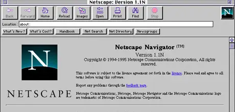
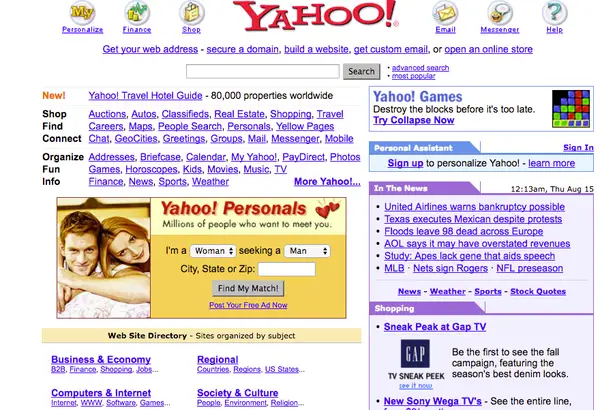

📋 Resumo
. Se 1993 havia mostrado ao mundo o potencial de navegar visualmente pela Web graças ao Mosaic, 1995 foi o ano em que esse potencial se converteu em realidade comercial, institucional e cultural. É o marco da transição da internet “para especialistas” para a internet “para todo mundo”. É o momento em que empresas surgem, provedores se multiplicam, navegadores entram em guerra e o mundo descobre que a Web pode ser um mercado, uma vitrine, um ambiente de trabalho e até um espaço de convivência diária.
📚 Detalhes
Para entender o impacto de 1995, é importante lembrar o que estava acontecendo pouco antes. Em 1994, Jim Clark e Marc Andreessen — o criador do Mosaic — fundaram a Netscape Communications. No ano seguinte, 1995, a empresa lançou o Netscape Navigator, um navegador mais rápido, mais estável e visualmente mais moderno que seus antecessores. O Navigator tornou-se rapidamente o navegador dominante no mundo inteiro, controlando mais de 80% do mercado e moldando o design, a navegação e o comportamento da Web.

O sucesso do Navigator foi tão absurdo que, ainda em 1995, a Netscape protagonizou uma das ofertas públicas iniciais (IPO) mais surpreendentes da história, inaugurando a era das empresas “.com”. Esse evento é frequentemente citado como o início oficial da “bolha da internet”, um movimento econômico que redefiniria o mercado financeiro global.
Mas 1995 não marcou apenas o triunfo da Netscape. Foi também o ano em que a NSFNET, que até então era a espinha dorsal pública da internet, foi oficialmente desativada como rede principal. Isso abriu espaço para que provedores privados assumissem completamente a infraestrutura. Pela primeira vez, a internet não estava mais sob controle primário do governo e do meio acadêmico: era um território aberto ao mercado.
Grandes empresas de telecomunicação, pequenos provedores regionais e startups começaram a vender acesso à internet para consumidores comuns. Na prática, 1995 é o ano em que a internet chega às casas — ainda limitada, lenta, via modem discado, mas pela primeira vez um produto cultural real, anunciado em jornais, revistas e comerciais de TV.
Outro marco essencial de 1995 foi o surgimento de empresas que se tornariam pilares do mundo digital contemporâneo. A Amazon foi fundada em 1994, mas foi em 1995 que lançou oficialmente seu site, iniciado como uma simples livraria online. Poucos imaginavam que aquele esboço de comércio eletrônico se tornaria, décadas depois, uma das maiores empresas do planeta. O eBay, criado em 1995, introduziu um conceito inovador: uma plataforma onde qualquer pessoa podia comprar e vender produtos, antecipando o modelo dos marketplaces modernos. A internet começava a ganhar uma economia própria, com circulação de dinheiro, produtos, serviços e publicidade.
Do ponto de vista da cultura digital, o ano de 1995 também marca o surgimento do Yahoo!, um dos primeiros grandes portais da Web. O Yahoo! funcionava como um enorme índice de sites, reunindo conteúdos, notícias, guias e serviços. Seu papel era facilitar a navegação em uma Web que crescia rapidamente, mas ainda não tinha mecanismos avançados de busca. Para muitos usuários, o Yahoo! foi a “porta de entrada” da internet durante toda a segunda metade dos anos 1990. Seu sucesso mostra como a Web já começava a adquirir uma organização social própria, com hubs e centros de informação

Outro marco importantíssimo de 1995 foi o lançamento do Java pela Sun Microsystems, uma linguagem de programação pensada para rodar em qualquer máquina e criar aplicações dinâmicas dentro da Web. Isso expandiu enormemente as possibilidades de desenvolvimento de sites e serviços online.
Em paralelo, a linguagem PHP também começou a aparecer nesse período, permitindo que sites se tornassem cada vez mais interativos. A Web deixava de ser apenas estática e textual e começava a evoluir para ambientes dinâmicos, que mais tarde dariam origem a redes sociais, streaming, lojas virtuais completas e sistemas de login.
O ambiente cultural da época também ajudou a impulsionar o crescimento da internet. Em 1995, o acesso doméstico era um símbolo de modernidade, associado a computadores pessoais cada vez mais populares. Revistas de tecnologia, programas de TV e anúncios publicitários apresentavam a internet como “o futuro chegando às casas”. A cultura jovem começava a experimentar bate-papos online, fóruns, listas de e-mail e as primeiras comunidades virtuais. A ideia de socialização digital — ainda tímida, centrada em IRC e newsgroups — começava a assumir forma, especialmente entre adolescentes e estudantes universitários.
Esse período é frequentemente descrito como um momento de “esperança tecnológica”. A internet parecia oferecer um futuro democrático e aberto, onde qualquer pessoa poderia publicar conteúdo, criar negócios ou compartilhar conhecimento. Havia uma crença de que a Web promoveria igualdade, liberdade de expressão e acesso ilimitado à informação. Muitas das utopias digitais nascidas em 1995 definiriam o imaginário coletivo ao longo de toda a década seguinte.
Politicamente, governos começaram a olhar para a internet com mais seriedade. Surgiram debates sobre regulação, direitos autorais, privacidade e comércio eletrônico. Era evidente que a internet deixaria de ser uma “terra sem leis” e exigiria novas políticas públicas. Nos EUA, por exemplo, começaram as discussões que mais tarde levariam a legislações como o Communications Decency Act (CDA). Em outros países, universidades e governos começaram a investir na criação de redes nacionais e infraestruturas que permitiriam acesso público à Web.
Em síntese, 1995 é o ano em que a internet deixa de ser apenas uma rede de comunicação e se transforma em um ecossistema econômico, cultural e tecnológico completo. A Web, impulsionada pelo Netscape Navigator, pelos portais como Yahoo!, pelas primeiras lojas virtuais e pelo acesso doméstico, começa a moldar o mundo. Sem 1995, não teria existido Google, Facebook, YouTube, Instagram, streaming, e-commerce ou redes sociais como as conhecemos hoje. É o marco fundador da internet comercial moderna.
Triumph of the Nerds (1996)
Documentário: https://archive.org/details/triumph_of_the_nerds?utm_source=chatgpt.com
.
Download: The True Story of the Internet (2008) — série sobre a história da internet
Documentário: https://en.wikipedia.org/wiki/Download_%E2%80%93_The_True_Story_of_the_Internet?utm_source=chatgpt.com
.🔗 Fontes de Pesquisa